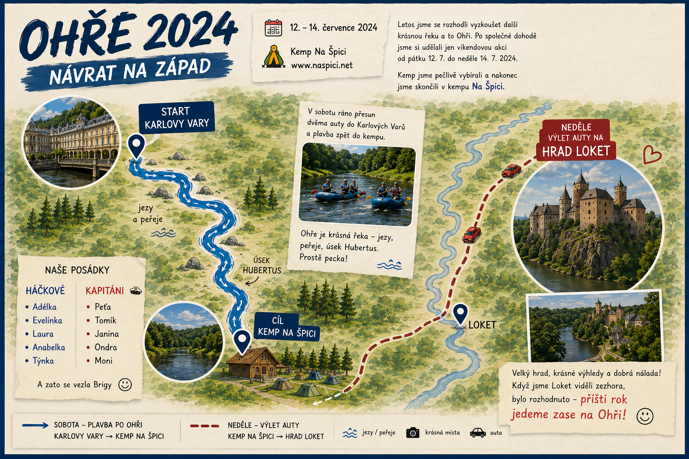

12.–14. července 2024
Letos jsme se rozhodli vyzkoušet další krásnou českou řeku – Ohři. Po společné dohodě jsme si tentokrát udělali pouze víkendovou akci, která se uskutečnila od 12. do 14. července 2024.
Kemp jsme pečlivě vybírali a nakonec naše volba padla na Kemp Na Špici. V pátek po práci jsme vyrazili směr Karlovarský kraj a naše víkendové tábořiště.
Přesně ve chvíli, kdy jsme dorazili do kempu, ani jsme nestihli vystoupit z aut, přišla pořádná bouřka. Tak jsme si na téměř půl hodiny udělali pohodlí v autech a čekali, až se počasí umoudří. Naštěstí se brzy znovu ukázalo sluníčko a my mohli začít stavět stany.
Po zabydlení jsme se vydali do místní restaurace na večeři. Mnozí z nás byli nadšeni, když v jídelním lístku objevili opravdovou retro klasiku – kuřecí plátek s broskví a sýrem. Po večeři jsme ještě chviličku poseděli a poté se odebrali do svých stanů.
Ráno nás čekal přesun dvěma auty do Karlových Varů, odkud jsme si usmysleli splout řeku zpět do našeho kempu. Všech pět našich plastových AGARů krásně kopírovalo tok řeky a my si začali naplno užívat, jak nádherná řeka Ohře vlastně je. Jezy, peřeje a úsek Hubertus – prostě naprostá pecka!
„Háček musí hlásit! A když nevidí kameny, je to většinou špatné…“
Jedna z posádek si cestou dopřála neplánovanou koupel a někde v proudu skončilo i naše epesní modré tričko.
V pozdním odpoledni jsme dopluli zpět do kempu, kde jsme vyzkoušeli další speciality místní restaurace. Něco se vypilo, něco probralo a nakonec padlo rozhodnutí, že se v neděli před cestou domů zajedeme podívat na hrad Loket.
Neděle už probíhala v tradičním duchu – sbalit stany, všechno naskládat do aut a hurá na hrad. Když jsme Loket viděli z vyhlídek nad Ohří, bylo rozhodnuto:
Příští rok jedeme zase na Ohři! 🚣♂️
Mapa naší výpravy

Sobota: plavba z Karlových Varů zpět do Kempu Na Špici.
Neděle: výlet auty na hrad Loket před cestou domů.
Naše posádky
Háčkové
Adélka
Evelínka
Laura
Anabelka
Týnka
Kapitáni
Peťa
Tomík
Janina
Ondra
Moni
Speciální člen výpravy
A za to všechno se vezla Brigy. 😊
Fotogalerie